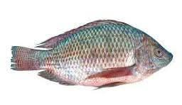
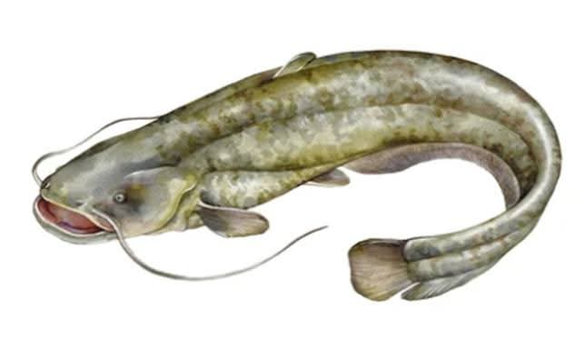

Breed Recommendations
Tilapia (Cichlids)

Oreochromis Niloticus is the preferred Tilapia species for captive fish farming due to its strong adaptability and market value.
Why choose Tilapia:
- Fast growth rate
- Efficient feed conversion ratio (FCR)
- High tolerance to varied environments
- Disease resistance
- Reproduces easily in captivity
- High market demand & yield
- Eco-friendly: reduces pressure on wild fish
Why we recommend monosex Tilapia:
- Faster growth in males: Males grow faster; females divert energy to reproduction.
- Prevents uncontrolled breeding: Avoids overpopulation, stunted growth, poor water quality.
- Uniform size and efficiency: Improves feed use, harvest, and profit predictability.
African Catfish (Clarias gariepinus)

Why we encourage farming Catfish:
- Good feed conversion ratio (FCR ~1.2)
- Air-breathing ability
- Tolerant to suboptimal water
- High post-fingerling survival
- Polyculture compatibility with Tilapia
- Nutritious meat: low fat, high protein
Why Catfish meat is in high demand:
- Mild Flavour
- Ideal for children and picky eaters.
- Soft Texture
- Easy to chew for all age groups.
- High in Protein
- Promotes growth and immune health.
- Low in Mercury
- Safe for regular consumption.
- Rich in Nutrients
- Contains Omega-3, Vitamin D, B12, and minerals.
- Affordable & Accessible
- Readily available through captive farming.
Profitability of Catfish Farming:
- Harvestable in 4–6 months
- Reaches 0.5 to 1.5kg at harvest
- Cost-effective feeding and high yield